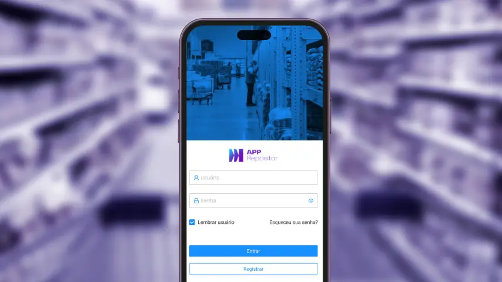

Redes varejistas
Operações e varejo Service design Design system
A grande maioria das redes varejistas opera em meio ao caos, apagando incêndios diários. Precisamos desenvolver uma nova ferramenta para auxiliar na gestão operacional do varejo, com informações relevantes para a tomada de decisão no dia a dia.